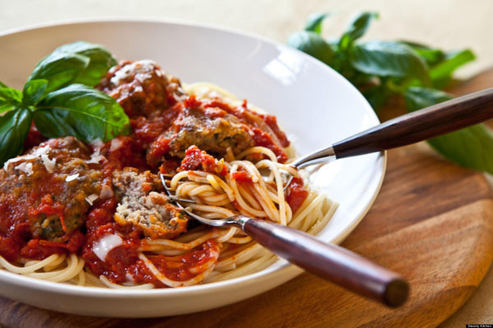
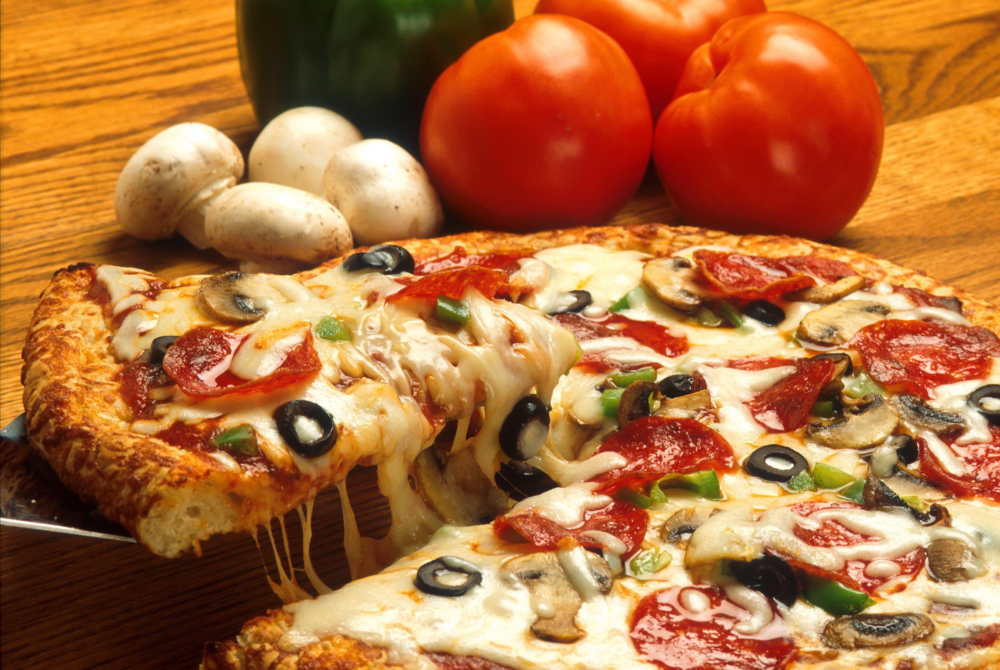
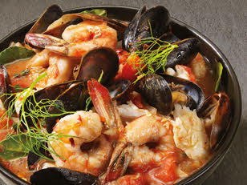

Food
|

Spaghetti |

Pizza |

Seafood |
Italy is well known for their spectacular food and a lot of people have misconceptions about how their food differs geographically. Similar to the states, popular foods for Italian natives vary from different regions. Fore example, in the north of Italy, natives tend to lean more towards red meat and vegetables along side. The southern cuisine is based on more seafood, as they are towards the sea, and lamb.
More on Food
Their cuisine is so remarkable that whole world has taken a little bit of an Italian twist into their lives. Many countries have adapted to foods like pizza and pasta and have incorporated it into the market. With that being said, Italians have their own particular way of life with their cuisine. First and foremost, the main meal of the day in Italy is lunch. Lunch is consisted of five parts: antipasti, il primo, il secondo, fruit or dessert, and coffee. The meal kicks off with antipasti which usually includes olives, salami, and cheese, then the first course, il primo, which is usually pasta, followed by the main course, il secondo, including meat or fish with a side of either salad or vegetables. In Italy, there are many variations of cooking but many people have misconceptions on how their food differs geographically. Read More
Language
The official language in the Italian republic, or, Repubblica Italiana, is Italian. As with any other language, the Italian language includes formal and informal communication. The two different communications are used depending on what kind of situation you are in and who you are communicating with. For example, one would choose to speak formally if they are meeting someone for the first time, or even speaking to an elderly. In addition, Italian is spoken in different dialects throughout Italy. For example, the pronunciations of an individual from Florence might differ from an individual that is from Rome. Nonetheless, languages such as Albanian, Croatian, Greek, German, and French are also spoken amongst some Italian natives. Last but not least, Italians are well known for their hand gestures and no communication with an Italian will be authentic if you don’t incorporate some type hand movement! Read More